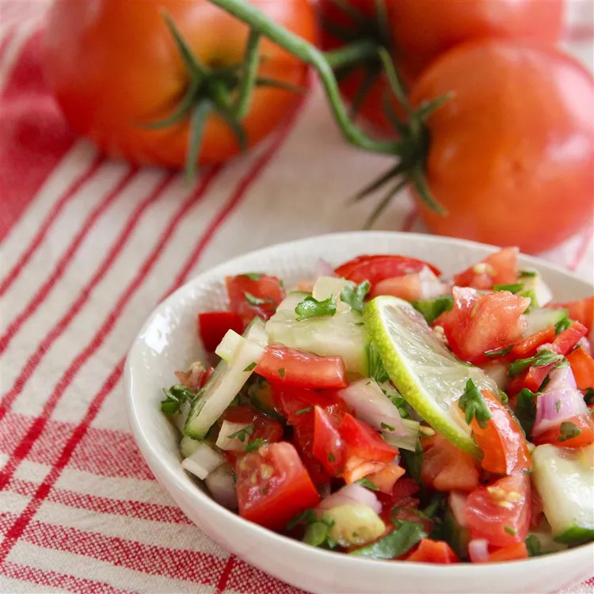

Vinagrete

The Best Side Dish In The World
A refreshing side dish to pair with chicken, pork, or beef.
Ingredients
- 5 tomatoes, diced
- ½ English cucumber, quartered and thinly sliced
- 1 red bell pepper, seeded and diced
- ½ cup diced onion
- ½ cup finely chopped fresh parsley
- ¼ cup lime juice
- ¼ cup olive oil
- ¼ cup diced green onions
- ¼ cup finely chopped fresh cilantro
- 2 tablespoons cider vinegar
- salt and ground black pepper to taste
Steps
-
Mix tomatoes, cucumber, red bell pepper, onion, parsley, lime juice, olive oil, green onions, cilantro, vinegar, salt, and pepper in a large bowl.
Let stand at room temperature until flavors combine, about 3 hours.